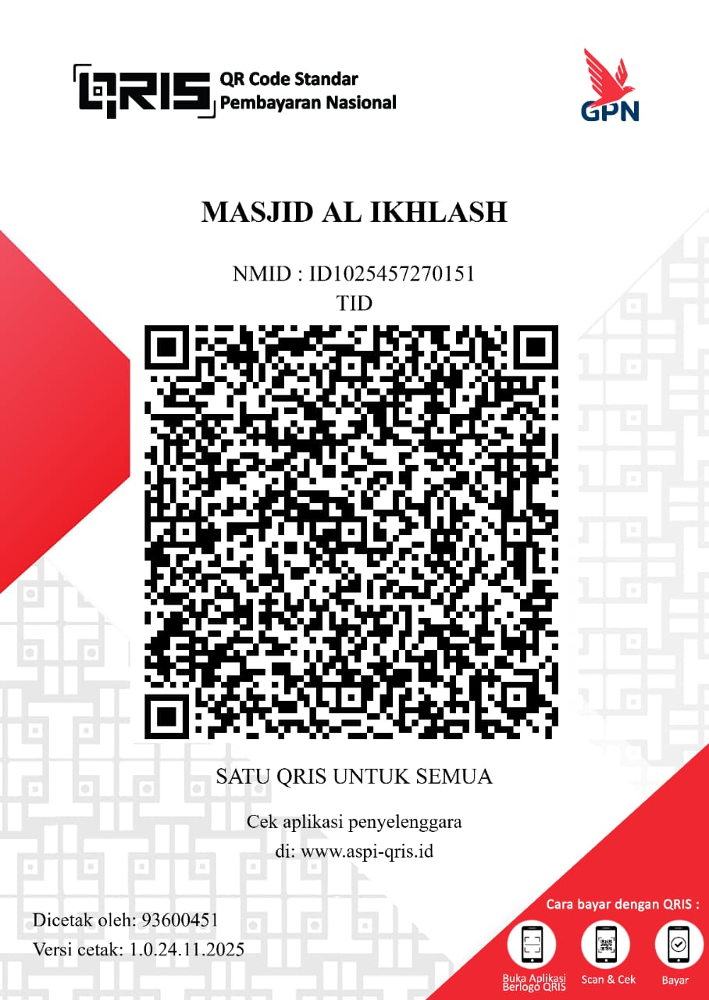
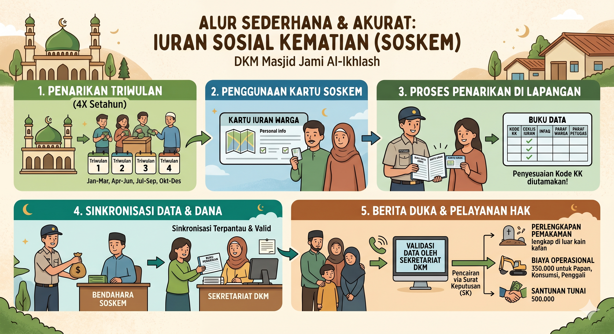
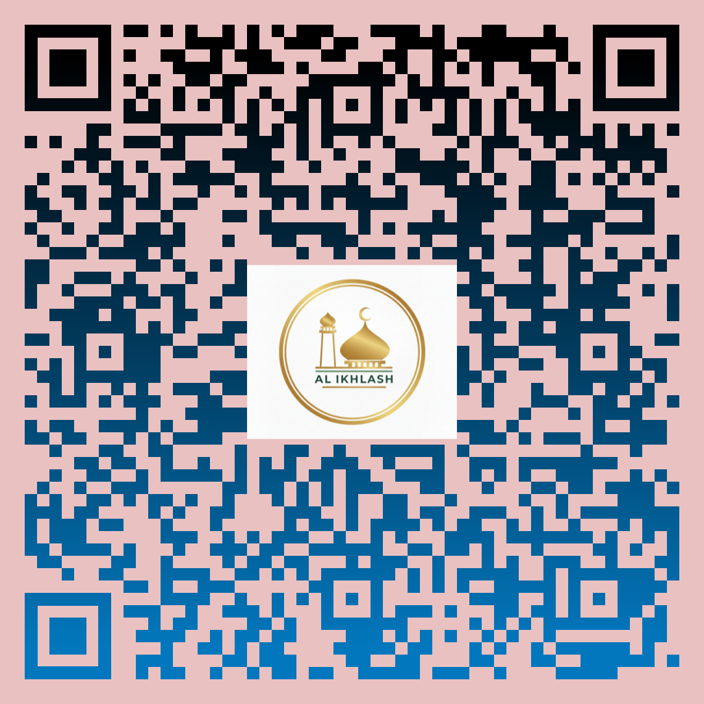
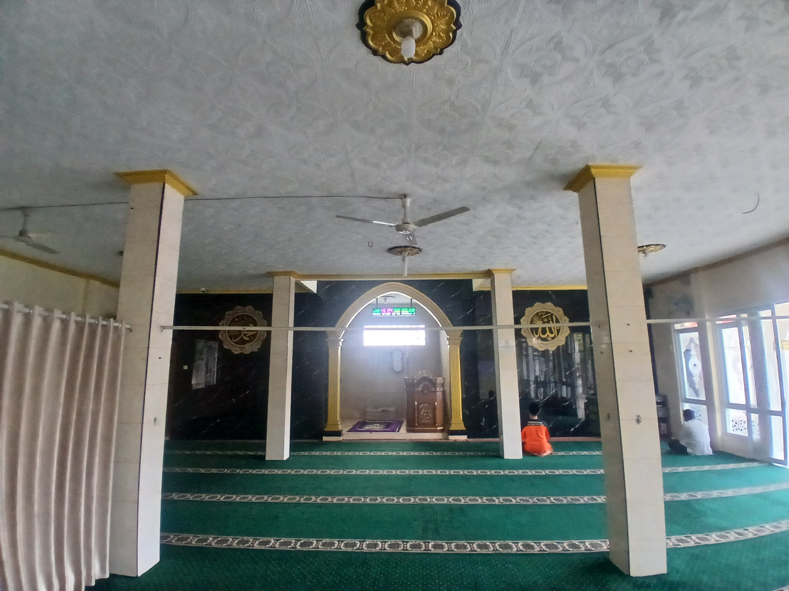
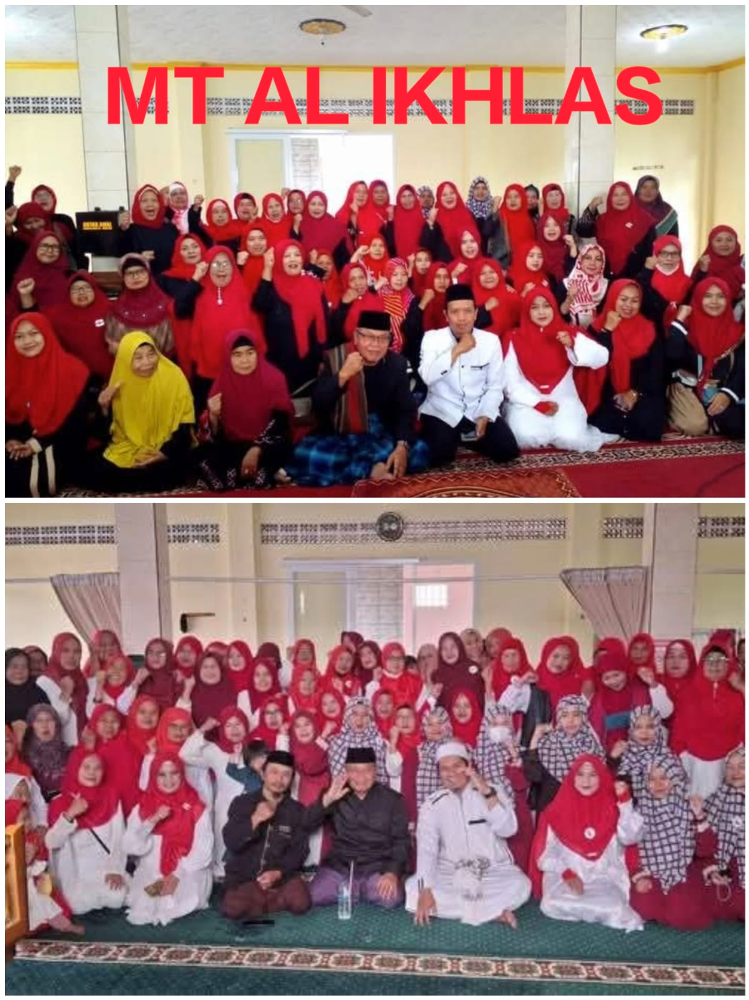
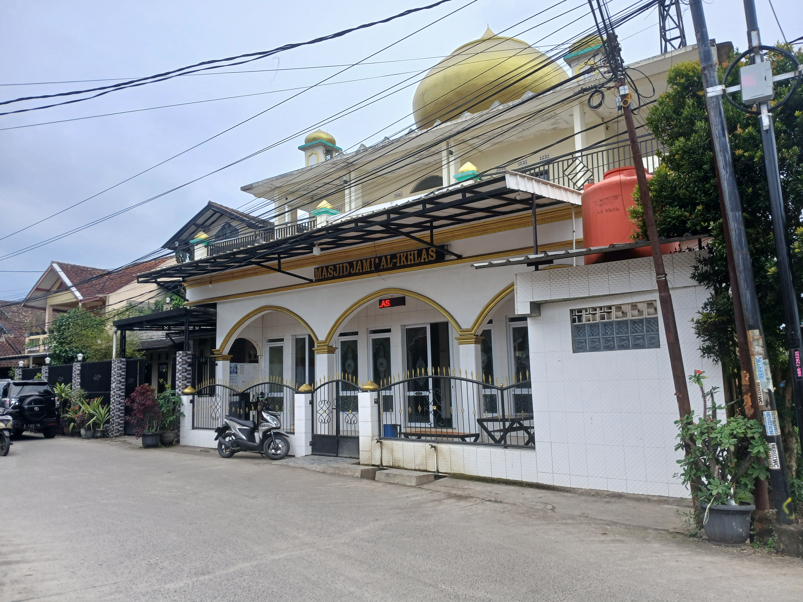
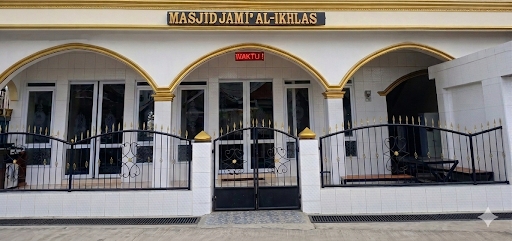
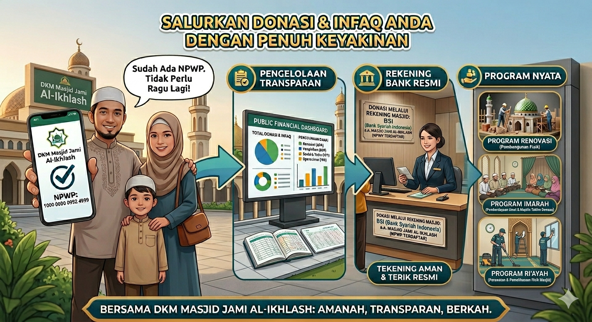

AL-IKHLASH
Sangkanhurip, Kab. Bandung
Sangkanhurip, Kab. Bandung
Mewujudkan transparansi informasi publik masjid berbasis digital.
"Memuat mutiara hikmah..."
-Pengurusan jenazah,serta koordinasi iuran dana sosial kematian untuk santunan keluarga duka secara cepat dan responsif.
Sistem informasi masjid, transparansi data iuran, dan monitor keuangan umat secara terbuka.
Pemeliharaan berkala infrastruktur fisik serta pengembangan jangka panjang fasilitas utama masjid.
| Uraian Agenda / Keterangan Transaksi | Status Jumlah (Rupiah) |
|---|---|
| Saldo Awal (Per 22 Mei 2026) | Rp 1.228.000 |
| Pemasukan Kencleng Idul Adha | + Rp 1.500.000 |
| Pengeluaran Kafalah Sorban Idul Adha | - Rp 150.000 |
| TOTAL SALDO AKHIR OPERASIONAL DKM | Rp 2.578.000 |
Alokasi dana ini dikhususkan sepenuhnya untuk pemeliharaan fasilitas utama, perluasan area ibadah, dan renovasi fisik Masjid Jami' Al-Ikhlash.

SCAN QRIS KHUSUS RENOVASI
Dana langsung masuk ke pos rekening pembangunanPos anggaran mandiri yang dihimpun dari iuran berkala jamaah dikoordinasikan oleh Bidang Sosial DKM untuk penyediaan kain kafan, akomodasi, biaya penggali kubur, hingga santunan duka secara instan.


Scan QRIS di bawah ini untuk sedekah jariyah operasional umum DKM:

Pembina / Sesepuh

Pembina / Sesepuh

Pembina / Sesepuh

Pembina (RW 18)

Pembina / Sesepuh
Ketua DKM
Sekretaris
Bendahara
Bidang Imarah
Imam Tetap
Bidang Riayah
Dunia sedang berubah, begitu pula dengan lanskap jamaah kita. Masjid bukan lagi sekadar tempat ibadah ritual yang statis, melainkan episentrum peradaban yang harus terus hidup melintasi generasi. Hari ini, tantangan terbesar bagi pengurus takmir bukan lagi membangun fisik menara, melainkan bagaimana membangun jembatan komunikasi dengan generasi baru yang lahir di era digital khususnya Generasi Z.
Gen Z adalah kelompok digital native. Mereka mencari transparansi, kemudahan akses, akuntabilitas, serta keterlibatan emosional melalui teknologi di dalam genggaman mereka. Oleh karena itu, digitalisasi tata kelola masjid menjadi sebuah keniscayaan melalui integrasi sistem informasi yang inklusif demi menyambut masa depan.
Baca Selengkapnya (Utuh)








Wilayah Sangkanhurip, Katapang & Sekitarnya (Kab. Bandung)